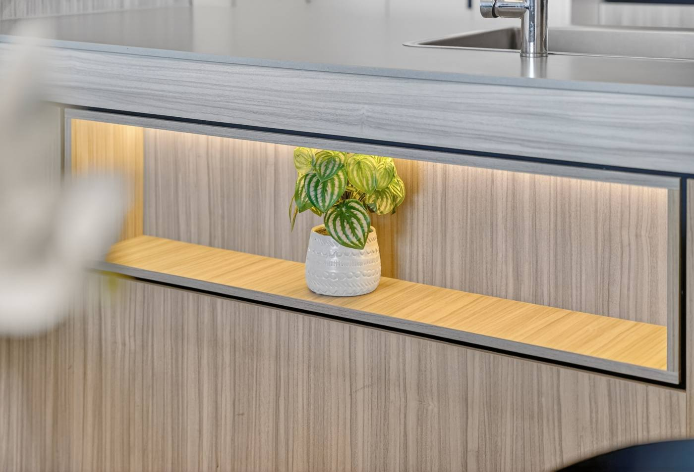

Make the everyday
look its best.
Start with cleaning, decluttering, lighting and the garden. Small, visible changes can lift the way a home presents.
Clear surfaces. Clean glass. A welcoming entry.A beautiful home is one thing.
A well-prepared sale is another.
Know what to change, what to repair and what to leave alone. A practical guide to preparing your property—with a clearer head and a considered budget.
Make a plan for my home ↘
A useful place to start.
No signup. No guesswork.
Before the paint samples and the trade quotes, take a step back. The right preparation makes a home easier to understand, easier to love and easier to move into. It doesn’t have to mean a renovation.
Start with cleaning, decluttering, lighting and the garden. Small, visible changes can lift the way a home presents.
Clear surfaces. Clean glass. A welcoming entry.Investigate leaks, damage and safety concerns. Use qualified trades and keep records of the work.
Sound repairs before fresh paint.Flooring, a kitchen refresh or exterior paint may make sense. Check the condition, the timing and your likely buyers.
Get a second opinion before a big quote.A new pool, extension or full renovation is usually more than a pre-sale refresh needs. Buyers may have their own plans.
Know when to put the tools down.
What does a buyer see from the doorway? Start there.
Select the jobs you’re considering. We’ll sort them into a starting plan to discuss with Cyril.
General guidance, not a quote or a promise of return. Your property’s condition and buyers matter.
First, make it sound.
Then, make it shine.
Know when to stop.
A six-week example. Your home may need less time—or more. Agree the priorities before booking trades.
Agree your shortlist. Get advice on repairs, compliance and paperwork. Book the trades you need.
Deal with leaks, damage and safety items before paint or styling. Keep invoices and any certificates.
Targeted paint, garden tidy-up and appropriate exterior cleaning. Finish work that creates dust or disruption.
Pack, declutter, clean and style. Clear the windows and check every globe.
Photography, floorplan and campaign preparation. Confirm sale documents with your solicitor.
Get these conversations started early. Your solicitor, conveyancer and licensed inspectors can confirm what applies to your property.
Homes sold in Queensland need compliant interconnected photoelectric smoke alarms, including in bedrooms, connecting hallways and on each storey. From 1 January 2027 the requirements extend to all existing private homes. Ask a qualified installer about your property.
Queensland Fire Department ↗If you sell without a valid pool safety certificate, prescribed notice requirements apply. For a non-shared pool, the buyer generally has 90 days from settlement to obtain a certificate. Shared pools have different responsibilities. Confirm the process with your solicitor and pool inspector.
QBCC pool guidance ↗Queensland’s seller disclosure scheme commenced on 1 August 2025. Unless an exemption applies, the seller disclosure statement (Form 2) and prescribed certificates must be provided before the buyer signs. Engage your solicitor early to prepare the right documents.
Queensland Government guidance ↗General information, reviewed 26 October 2026. Confirm current requirements for your property with the relevant professional.
Cyril’s background in engineering and construction project management brings a practical perspective to preparing a home for market.
Walk through the rooms together. Talk about the work you’re considering, the buyers you want to reach and the time you have. Leave with a clearer next step.



Start with its condition and what buyers at your price point expect. Cleaning or a targeted refresh may be enough. Compare the cost and timing of a full replacement with a simpler option before committing.
Yes, with no obligation to list. Request a visit at home or a video call. Cyril will contact you to agree a time.
No. Planning early can help you avoid doing the same work twice. Let Cyril know your approximate timing in the form.
Bien sûr. La visite et les échanges peuvent se faire en français. Indiquez simplement votre préférence dans votre message.
A free pre-sale walkthrough, at home or by video. A chance to talk through the work, the priorities and what comes next.
Your request has been accepted by our email service for delivery to Cyril. He’ll contact you to arrange a time.
A walkthrough time is confirmed directly with you. If you need to reach Cyril sooner, call 0402 293 358.
Back to my plan ↗